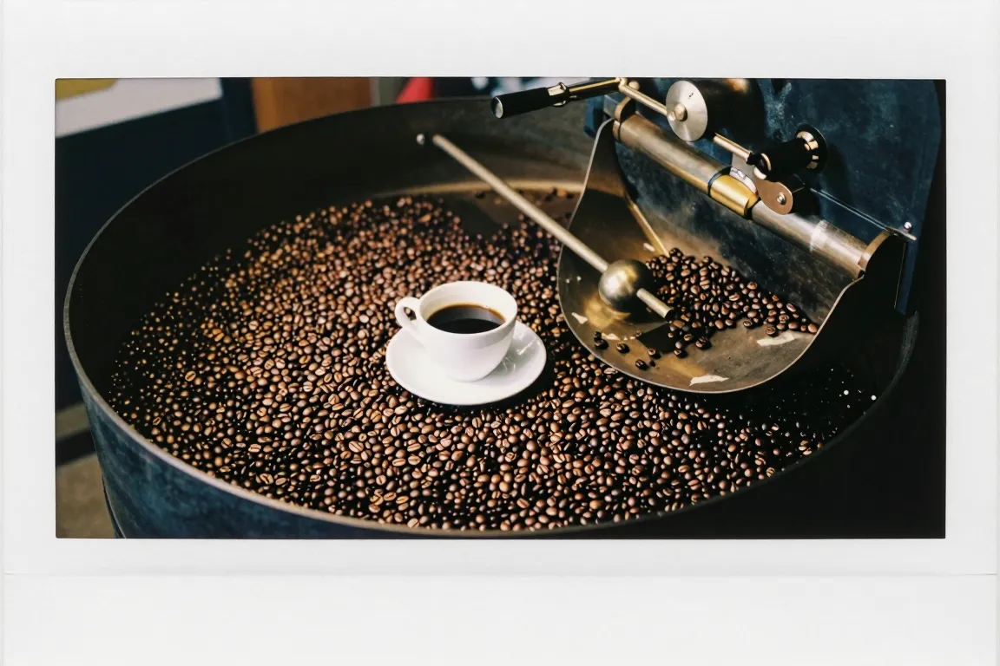

nett · 2013–now · også: VSCO-filter, Matt filmforhåndsinnstilling, VSCO-jentefoto
En stille fotogradering som kopierer filmmateriale: matte svarte toner, myk kontrast, dempede grønnfarger og varm hud. En forhåndsinnstillingskode som A6 eller HB2 setter den, og appens grensesnitt forblir blekt og sparsomt.

Kjerneidé
En forhåndsinnstilling, ikke et filter: redigeringen etterligner et ekte filmmateriale og må se ut som om ingen redigering har skjedd.
Designprinsipper
Løft svartpunktet til 8 % til 12 % grått og kutt kontrasten med 10 % til 20 %.
Trekk metningen ned til 80 % og skift grønt mot blågrønt (nyanse +10°) og hud mot varm beige.
Legg til korn på 4 % til 8 % og vis det bare ved 100 % visning.
Gi hver forhåndsinnstilling en kort kode på 2 til 3 tegn, som A6, og vis den i versal på 11px.
Vis forhåndsinnstillingsstripen som flate fliser på 72px med et omriss på 1px, og vis styrkeglideren fra 0 til 12.
Hold appens grensesnitt i off-white (#F2EFEA) og kull (#1F1E1C), uten farge bortsett fra fotoet.
Bruk en bred marg på 24px til 40px rundt hvert foto og la det stå uten kant.